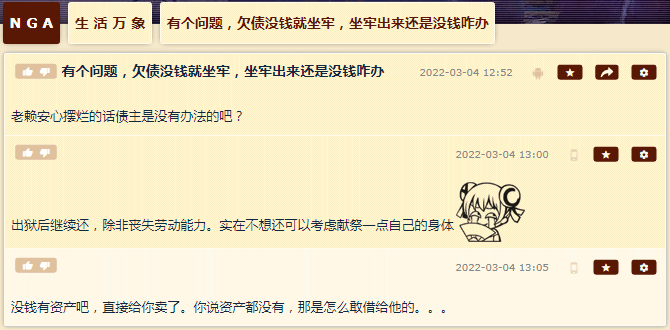
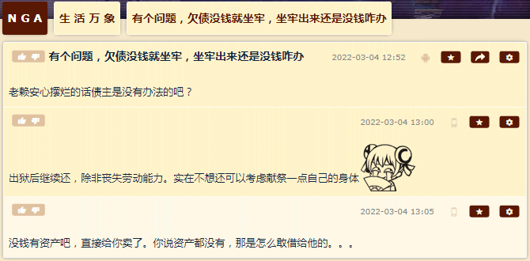
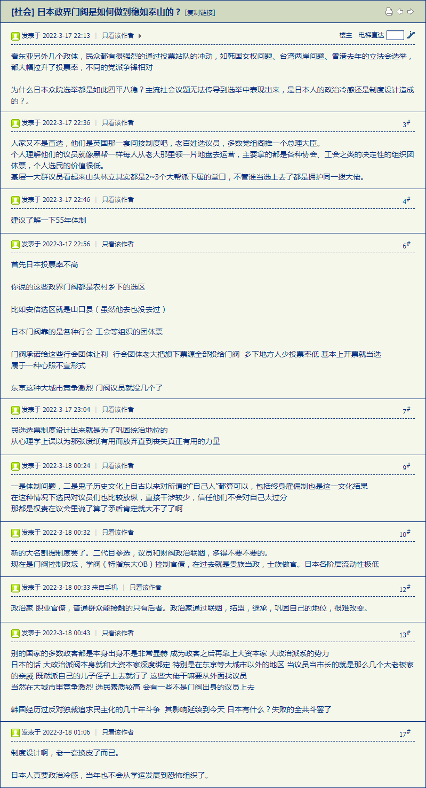

fanhan-inside
前情提要：
长话短说，备份情报兼素材：
范某截图备份于此
回忆中在十几年前于之江临安「原创文学论坛」等地就人民群众喜闻乐见的历史话题与大批民间历史学家兼以某四个字或八个字为口头禅的来自国际化大都市「华语第一精日论坛」的娱乐至死の色目逗哔远征军坦率的交换了意见，关于「接老子盘，扒儿子灰」等权威机构认证的历史真相，不应该视为大野の家学渊源，应该视为内亚外宾尤其是鲜卑高第良将的种族天赋。
简单说，当时提到，普六茹把当时接班潜力甚大的李琩招为赘婿的前提，是「杨丽华的成功可以复制，杨玉环的复制可以成功」，后来确实伙同武曌余孽连同部分宗室大力炒作过，并在干掉接班预备队排名前列的竞争对手之后再次炒作，只不过外戚没干过内宦而已。
但是鲜卑特色方针政策路线计划不能变，有条件要完成，没有条件创造条件也要完成，总而言之一定要完成。至于是否乃杨玉环坚决贯彻落实「养在深闺人未识」时期耳朵听出膙子的娘家系列重要讲话精神勾引李隆基，没有权威机构证实，总而言之这事成了。
于是就是开元之治伴随着天宝之乱，虚耗国帑在南诏打几场莫名其妙的烂仗，关中精锐府兵消耗一空，普六茹祠堂遍地开花事实割据。再大力扶持安禄山史思明两位色目太君于河北割据，并动辄以色目太君以两名为单位连续走失为理由，派遣根红苗正忠君爱国的童年才俊持尚方宝剑不远千里奔赴潼关阵斩高仙芝、封常清、哥舒翰，就可以「献祭长安」了也。
再后来的事情，人民群众都知道了，七月七日长生殿，普六茹家两名鲜卑精英杨国忠杨玉环走失，深入阴曹地府招募大批骷髅兵丧尸组建天灾兵团，除了须眉英雄之外，巾帼英雌也是半边天嘛，充分发挥基层动员能力，扶保寿王李琩登基即位并篡党夺权……未果沦为笑柄。
不过嘛，功在当代利在千秋，都2020年第七次人口普查了，普六茹祠堂还是在巴蜀滇黔遍地开花。
fanhan-inside
补充情报兼素材：
范某截图备份于此
前情提要：
卡壳世界・作文
“兵法可不是仅限于武家垄断，公家当中此道中人也不少，高手更是层出不穷。没有公门中人配合，许多技战术都难以施展”，师尊谆谆教导，“上兵伐谋，其次伐交。可以通过人脉运作暗中搞定的目标，就不需要公开解决。修改户籍、学籍，挪用身份，伪造档案，张冠李戴借尸还魂，只需要押司级别的内应，属于四两拨千斤的性价比极高的手段。十则围之，五则攻之。一旦拖到战场甚至赛场之上，付出的成本就太大了，没准最终战利品都无法弥补调动部队的开销，虽胜犹败划不来”。
⸺《设定集》之十六〈皇天后土纸猫刍狗〉
卡壳世界・注释
长话短说，境内党国高音喇叭和民间根红苗正忠君爱国的童年才俊猛烈抨击日本右翼否认南京大屠杀，就好比白皮右翼否认奥斯维辛集中营存在那样。阴谋论说希特勒是色目太君豢养的黑奴，负责拖着德意志民族神圣罗马帝国下地狱，宁愿自己贫穷也要把财富赠送给别人。所谓集中营只是个幌子，色目难民暗地里都被美帝灯塔国派遣海军接走了。据称还有罗斯福的手稿书信称赞希特勒是「伟大的统治者」，并且抚掌大笑「白宫就需要这样的人才」。
只要按照上述「曼德拉效应」所指使的风向带节奏，几代人就能把战后几十年洗脑形成的共识彻底扭转。
正因为一切历史都是当代史，所以《设定集》当中的剧情，会根据现实政治和意识形态斗争局势变化。之前注释当中提到的拿破仑与奥斯维辛集中营相关剧情，可以安排为暗地里跑到百善の新世界掀起美国独立战争嘛，六百万阴兵助选怎么输？并且战时的公开新闻报道还都是「驱逐」，直到拿破仑败局已定才改成「屠杀」，并且有设计师工程师加班加点炮制集中营遗址，还有考古学家和文物贩子负责造假做旧。
⸺《设定集》注释〔124〕
简单说，在奇幻语境之下，才有「亡灵巫师」「不死军团」之类描述，可以参考大批「万人坑」，包括但不限于红色高棉丰功伟绩理解。于是印支半岛大批军阀指使政客矢口否认「赌场」「黑矿」「虞美人种植基地」当中都是行尸走肉「血奴」，总而言之无人权。
而在本位面现实当中，就是解读过的「“海里有人”“海边有人”手眼通中央军委/政法委/户部“」仅凭副股级干部伸出一根小指头点一下鼠标就能炮制「摄魂」「夺舍」「附体」之类玄乎其玄的划时代玄幻大作精品文艺。于是在太平洋西岸「你有身份证么」的同时，太平洋东岸「六百万张费拉尼堪身份证凭空涌现，犹太碧池の舔狗接盘侠千古流芳绿帽王约瑟夫怎么输？」
fanhan-inside
补充情报：
范某截图备份于此
 

结合上述前情提要中《设定集》之十六〈皇天后土纸猫刍狗〉理解。
以前提到了去年11月2日人民警察上门约谈时提及「你爹是不是用你的名义在外面借了好多钱」「有借条么」「有人找你讨债么」，我说「确实拿着我身份证很长时间不知道干啥去了，从来没有什么账户往来」，至于是否有人「追债」，十步一岗五步一哨夜不闭户路不拾遗兲子脚下首善之区国际一流和谐宜居之都城乡结合部吉普赛社区「军休所」早就变成「哥布林巢穴」了，江湖好汉草莽豪杰地痞流氓泼皮无赖「教科书般碰瓷奥义」层出不穷，虽然没碰到我头上，但是很难说是否有「“海里有人”“海边有人”“手眼通中央军委/政法委/户部”」的好莱坞（以及圣费尔南多谷）中央制片人联席会议安插的剧务在「异世界拷问姬」吉娜・哈斯佩尔卓越领导下，坚决贯彻落实「撒谎偷窃诈骗」最高指示精神从事各种军事行动。
具体到这份情报，可以认为「债主」的最优策略，是在十步一岗五步一哨夜不闭户路不拾遗兲子脚下首善之区国际一流和谐宜居之都开设「皇宫兼妓院」，从内亚选拔鲜卑艳星「妖艳贱货李师师」勾引现任全票冻蒜人民领袖，并运作「人脉」塞给至东南互保地区党国栋梁青年才俊接盘，并在年底无遮大会上将其拱为全票冻蒜人民领袖，再修改党政军财各个要害部门后台服务器大数据，将所有债务一股脑扣到各地「首富」头上，再出动汉阳造「八三四幺」传国玉玺「暴力讨债」……人民民主专政铁拳武德充沛侠义无双一力降十会咋地吧？
fanhan-inside
acd12344
这是在干什么？
如你所见，「日志」，主要作用是「备忘」，保存一些应景的情报和素材。
具体到本篇，曰若稽古部分是十几年前在服务器还位于十步一岗五步一哨夜不闭户路不拾遗兲子脚下首善之区国际一流和谐宜居之都的「原创文学论坛」就相关「军史题材」文艺作品发表的「文学批评」内容。而如是我闻部分来自后来已经意识到并亲自卷入现实政治和意识形态斗争之后与繁荣的简体中文互联网上活蹦乱跳的色目情报掮客在亲切友好的氛围中就共同关心的话题坦率交换意见的内容。
简单说，杨玉环女士那跌宕起伏的感情经历，正如其长辈杨丽华女士一般，是关陇集团准备另请高明的前置剧情。
注意在那鲜卑武德充沛兲命昭昭的时代，也不是所有杨某都「谢主隆恩」改姓普六茹（注：琉球杨昌吉只配姓「喜纳」），偏偏关中豪门贵种弘农杨氏（曾如袁绍一般四世三公）改了，也不是所有李某都「谢主隆恩」改姓大野（注：台湾李登辉只配姓「岩里」），偏偏内亚高第良将陇右李氏改了。
当时就事论事的结论上面提到了，随着「李寿王」接班指数跌宕起伏，与杨玉环的感情关系也随之变动，是否有相关金融衍生品在长安城西市聂斯脱利坊公开交易，尚无权威机构认证。
顺便补充背景：一代贤后武则天左拥右抱的两根飒爽棒槌张易之张昌宗，是杨国忠杨玉环的亲舅舅。
当时这帮「柱国」基因之间的关系，可以参考最晚从当时（平安京乃和谐宜居之都但并不国际化也不算一流）一直延续到现在的日本「源平藤橘」基因的关系：
范某截图备份于此

严密的考虑问题，还可以对照李尸朝鲜自古以来坚决贯彻落实的「骨品」「庶孽禁锢法」之类畜牧业高新科技认证标准理解。
fanhan-inside
acd12344
这是在干什么？
等一宿没啥情报和素材，那么现在把准备好的包袱甩出来吧，当剧透也可以。
简单说，当代日本地方政府一把手唤作「知事」，是铁血大送朝的政治规矩和组织纪律之渊源。我中华兲嘲上国那许多「知州」「知府」「知县」类似。于是在《设定集》之十三〈雷霆雨露皆是君恩〉当中「异域风情的假话」就蕴涵了充沛的政治和意识形态斗争并引领了激烈的政治和意识形态斗争新动向：
卡壳世界・作文
“你看那个苏季比宁，身材高大、体格强壮、相貌英俊、武艺出众、还知书达礼懂情趣……现在才十七岁，一露面就岳峙渊渟气压全场，将来前途不可限量。刚考完就被任命为紫光阁修撰、兼钓鱼台检讨、判怡红院、兼提举潇湘馆公事、兼提举衡芜苑公事、华沙观察副使、兼但泽转运副使、同知稻香村事、奉直郎、赐绿、金鱼袋。”
提到过《设定集》当中「不出现黄种人」，地图草稿当中日本列岛在北美旁边。后面还有「谢邀，人在大阪，刚下飞毯」的伏笔。于是「东京都知事」「大阪府知事」就换成了「知东京都事」「知大阪府事」了也。
或问了，「同知××事」到哪儿去了？
这就是本篇日志的伏笔，改成「懂事」，设定为雌权主义把持的地盘上，没有啥「市委书记」「市长」之类一把手二把手的区别，只有「知事」「懂事」的区别，前者是「第一先生」，后者是「第一夫人」。
至于谁说了算？可以参考《“认命可以，躺平不行”（又续）》当中划时代桌面游戏《光明会纸牌》当中的剧透：
- 知美利坚事：威廉・杰斐逊・克林顿
- 懂美利坚事：希拉里・戴安娜・罗德姆
于是两位「国家级正职」领导「二圣并立」，乃三千年未有之划时代巾帼英雌武则天前仰后合李世民李治左拥右抱张昌宗张易之四根棒槌并下懿旨将「11月11日」定为普天同庆节的典故。
顺便把本篇日志加上《设定集》标签。